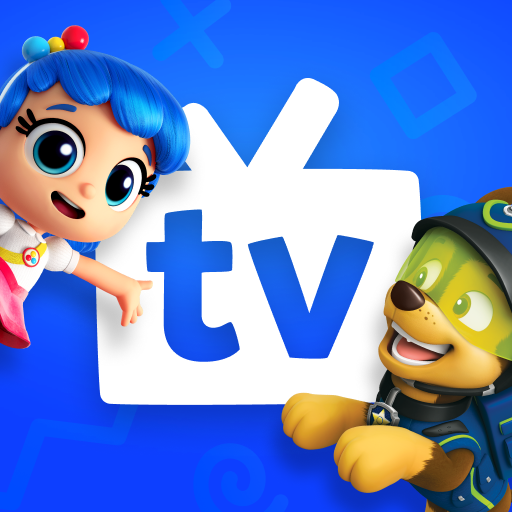

Jun-10-2021

Supports both Real-Debrid and Trakt.
Jun-22-2021
Jun-3-2021
Jun-6-2021
May-27-2021
| App | Description | Version | Download |
|---|---|---|---|
| Bee TV provides a simple tile view presentation with integration to all major services along with regular updates. | v2.8.5 Jun-10-2021 |
|
|
| Cuco TV provides a "one-click" style streaming app without the need to deal with choosing streaming sources. Supports both Real-Debrid and Trakt. |
v1.1.0 Jun-22-2021 |
|
|
| Cinema HD is another great alternative with a tile view interface with integration to all major services along with regular updates. | v2.3.7.3 Jun-3-2021 |
|
|
| Film Plus is yet another great alternative with a tile view interface with integration to all major services along with regular updates. | v1.2.8 Jun-6-2021 |
|
|
| Nova TV is another great alternative with a tile view interface with integration to all major services along with regular updates. | v1.5.0 May-27-2021 |
|
| App | Description | Version | Download |
|---|---|---|---|
| Happy Kids TV is an excellent, kids friendly streaming service with multiple age categories and a simple UI for kids to navigate in. TV edition. |
v5.1 Jun-14-2021 |
|
|
|  | Kidoodle TV is an excellent alternative, kids friendly streaming service with multiple age categories and a simple UI for kids to navigate in. TV edition. |
v2.0.3 Jun-7-2021 |
|
| Happy Kids TV is an excellent, kids friendly streaming service with multiple age categories and a simple UI for kids to navigate in. Tablet edition. |
v4.7.1 Mar-28-2021 |
|
|
| Kidoodle TV is an excellent alternative, kids friendly streaming service with multiple age categories and a simple UI for kids to navigate in. Tablet edition. |
v3.12.12 Jun-7-2021 |
|